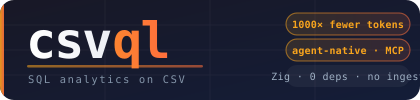

Run SQL on CSV files in place. No database, no import, no ingest. MCP-native, so an LLM can query a gigabyte file for a few hundred tokens instead of pasting it. A single static Zig binary. Your data never leaves your machine.
Pasting a 417 MB CSV into an LLM costs about 230 million tokens. It fits no context window. Over MCP, the agent queries the file in place and gets back only the answer.
| Question an agent asks | Tokens used |
|---|---|
| "How many trips per cab type?" | 43 |
| "Which year was busiest?" | 49 |
| "Average fare by passenger count?" | 123 |
Same answers, ~1,000–500,000× fewer tokens — flat, regardless of file size. One command wires it into Claude.
A database is something you load your data into. csvql is a query you run on the data where it already lives.
Ships as an MCP server. Agents query CSV/JSON directly; results are capped so a careless query can't flood the context.
SELECT only. No INSERT/UPDATE/DELETE/DROP exists. It cannot modify your data.
Zero network calls, no cloud, no telemetry. Run it next to the data with --root sandboxing and --audit logging.
Queries the raw CSV in place via mmap. No import step, no 2 GB native store to build first.
SIMD parsing, lock-free parallel execution, radix sort. On large files it reads raw CSV about as fast as your OS hands it the bytes.
Written in Zig. No runtime, no dependencies. macOS, Linux, Windows. Also on npm, PyPI, and Homebrew.
NYC Taxi benchmark on DuckDB's own dataset, both engines querying the raw uncompressed CSV directly (no preload), best-of-5.
| File | Query | csvql | DuckDB | Speedup |
|---|---|---|---|---|
| 417 MB | GROUP BY | 0.05s | 0.54s | ~10× |
| 8 GB | GROUP BY | 1.31s | 3.55s | ~2.8× |
Plus ~6× less memory and zero extra storage — DuckDB's comparable speed needs a 2.1 GB native store built over ~22 seconds first. Reproduce with bench/bench_taxi.sh.
# Homebrew (macOS / Linux) brew install melihbirim/csvql/csvql # Query a CSV csvql "SELECT cab_type, COUNT(*) FROM 'trips.csv' GROUP BY cab_type" # Wire it into Claude (Code + Desktop), no manual config csvql install
Prebuilt binaries and one-click .mcpb bundles for Claude Desktop on the releases page. Also: npm i csvql-query, pip install csvql-query.